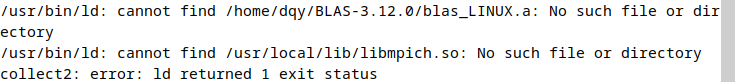
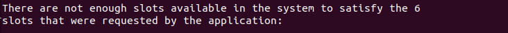
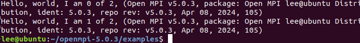
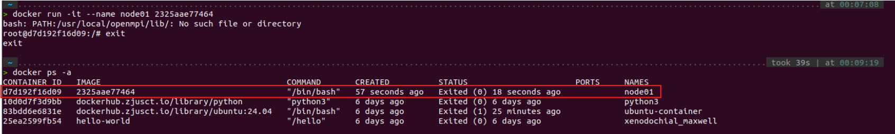

Lab1 Report¶
软件安装
- [x] 下载OpenMPI、BLAS和HPL的源代码并编译安装
集群搭建
- [x] 克隆虚拟机
- [x] 配置虚拟机互联
- [x] 测试节点间通信
性能测试
- [x] 在虚拟机集群上使用openMPI运行HPL性能测试，记录测试结果
Bonus（选做）
- [ ] 配置NFS并复现实验
- [ ] 使用Docker复现实验
- [ ] 使用Spack复现实验
1. 虚拟机的搭建¶
我搭建的虚拟机环境配置如下：

装机完成后为虚拟机下载必要的build-seeential软件包，其中包含了全面的编译器和构建工具
2. 任务一：从源码构建OpenMPI和HPL¶
接下来的构建和安装分为三个部分
2.1 BLAS & CBLAS¶
BLAS¶
make的时候会报错sudo apt install gfortran再次
make后将刚下载到的库文件复制到系统库文件

CBLAS¶
接下来我们的目标是接下来我们要编译CBLAS文件，得到cblas_LINUX.amake之前需要修改Makefile。打开Makefile.in，可以看到
我们需要指定BLAS库的路径，刚刚我们已经把blas_LINUX.a复制到了系统库文件，修改路径如下

这样就可以make

P.S. 中间有几条warning，但没有error

成功在 /CBLAS/lib中生成了cblas_LINUX.a
把它也复制到/usr/local/lib/libcblas.a
2.2 OpenMPI¶
/usr/local/openMPI漫长的等待后安装完成
接下来需要修改PATH和LD_LIBRARY_PATH(之后讲MPI的时候会提到)，我是使用nano打开修改的
.bashrc的最上面配置环境变量

最后运行一下使修改生效
2.3 HPL¶
为HPL构建提供一个合适的Makefile文件/hpl-2.3/bin/Linux_PII目录下找到的可执行文件xhpl

P.S 任务一源码构建的内容虽然看起来不甚复杂，但对于新手属实不友好。前置实验对Angband的构建中，对安装路径强调的不多，在实验文档中说
./configure # 不带参数，将默认安装到 /usr/local/ 下，此时不需要修改 PATH 和 LD_LIBRARY_PATH 等 ; 如果你使用 --prefix 参数指定了安装路径，则可能需要修改 PATH 和 LD_LIBRARY_PATH。
但在第一次使用尝试（ubuntu）的时候内存不足，第二次改用Debian发现并没有下载到local里，而是在/home/lee/下，BLAS也完全没有配好，既没有把库放在正确的位置，也没有在Makefile.Linux_PII中修改成正确的路径，导致一直error，花了很长时间一度很崩溃。第三次尝试又换回ubuntu，configure的时候用了--prefix指定/usr/local，添加了PATH和LD_LIBRTARY_PATH环境变量，按照Makefile去放置库

3. 任务二：使用HPL测试虚拟机集群的性能¶
3.1 集群节点间的连接与互访¶
用VMware Workstation自带的功能克隆虚拟机，命名为node01，node02，node03，node04。
在克隆时选择完整克隆
注意，不只是在 Hypervisor 中修改名字，还需要在虚拟机中修改 /etc/hostname
我们可以用sudo nano /etc/hostname来修改名称,之后reboot重启
/etc/hosts文件，添加其他节点的地址
根据ssh原理，我们需要在主节点(node01)上生成公钥，把公钥放到node02/03/04上，建立链接。(这一过程类似于第一次登录ZJU集群时的操作)

P.S 这里有个小失误，由于是重装了一台ubuntu来做的，所以之前没有装openssh-server和openssh-client，应该先装好再克隆的

之后再操作就不会error了

根据提示尝试登录node02
红框处表面我们已经可以从node01登录node02的shell了
对node03/node04做同样的操作
3.2 测试MPI运行¶
在node01上写一个hostfile，指定节点和进程数(直接新建就好，这里我建在了/home/Documents)
P.S 这个slots似乎是与当时设置的cores有关的，在前面测试MPI能否正常运行的时候，执行mpirun -n 2 hello_c是可以的，如果超过2个MPI processes就会error。似乎是MPI会计算CPU的算力上限，给出限制。
SOLVED:设置环境变量声明export OMP_NUM_THREADS=8就可以设定线程数量


简单测试MPI可以正常运行
3.3 运行HPL¶
切换工作目录到HPL所在目录，xhpl需要在工作目录下找到HPL.dat
运行成功！
P.S 在写实验报告的时候第二次过了一下流程，发现ssh居然连不上了，后来发现虚拟机重启后IP地址也变了(?)，需要修改hosts文件。
4.Bonus尝试（未成功）¶
其实我完全还不清楚要怎么用Docker来复现集群的搭建，但我觉得Docker容器和虚拟机应该是十分类似的，我的基本想法是：在一个ubuntu容器中搭建一个类似之前The One一样的主节点，把它创建成镜像。用这个镜像再创建三个容器（类似于克隆虚拟机），让他们互相ping通，形成集群。概括来说是一台主机、四个容器的结构。
但由于时间和能力有限，只在一个Docker容器中复现了The One的环境配置，并手动构建了镜像，这里只记录了遇到的问题，其他步骤与The One的配置一样
新的ubuntu-container进去后只有root用户，需要自己创建一个用户、下载sudo，并把该用户添加到sudoers file中
使用root用户权限，打开 /etc/sudoers ，添加
在配置CBLAS进行make的时候，本来的warning变成了error，需要在Makefile.in中对编译选项进行修改
之后的构建与之前完全一致，但在测试OpenMPI的时候出现了问题
由于时间问题，该报错仍然没有解决
手动构建镜像后可以再 images 中查看到该镜像
我们可以用

后续应该需要设置容器的网络来实现相互的链接
5. 总结¶
至此，Lab1的大部分工作告一段落。说实话，这对大佬来说当然是轻而易举的事情，作为一个之前连linux和虚拟机都从来没碰过的纯纯小白，当意识到有一个小集群运行在自己电脑上时，还是相当激动的。
我不确定会在HPC这条路上走多远，但很高兴，已经开始了